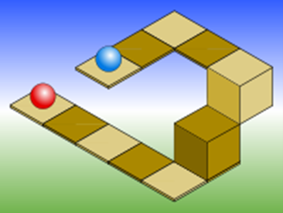
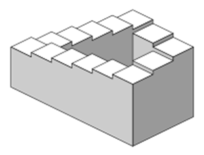
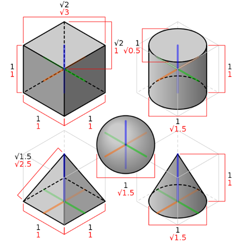
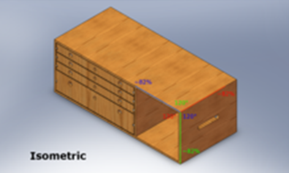
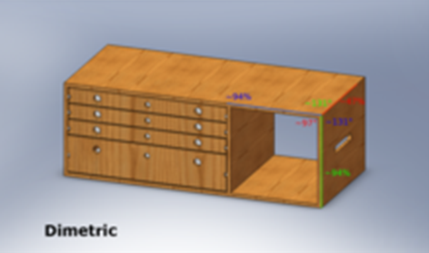
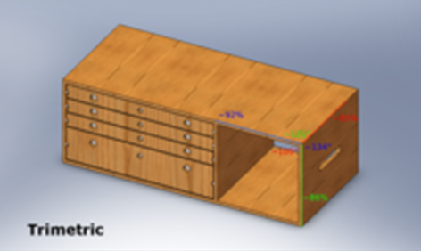
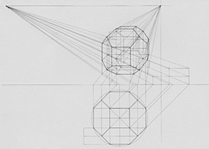
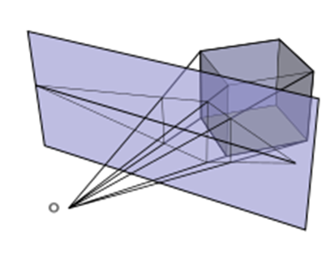
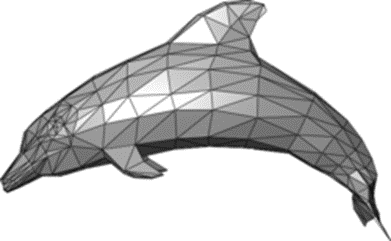
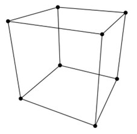

Základem všech typů promítání je zachycování paprsků vyslaných ze všech bodů promítnutého objektu na promítací ploše. Nejsnadnější dělení je na dva typy první, když jsou vyslané paprsky rovnoběžné tzv. paralelní promítání a druhý je tzv. perspektivní projekce [1].
Pod paralelní promítání patří několik dalších podtypů, které mají většinou jen detailních rozdíly, ale výjimečně zde můžeme nalézt i drastické rozdíly jak ve využití, tak v jejich vlastnostech.
Paralelní promítání má ale i několik zásadních nevýhod, patří mezi ně především nerozeznatelnost výšky a hloubky, jak se můžete přesvědčit na Obrázku 1.1. Tyto omezení jsou ve velkém množství případů znatelné. Je to jeden z důvodů, proč jsou tyto způsoby zobrazení v počítačové grafice s velmi málo využívané. Těmito problémy můžou vznikat i zdánlivě nereálné obrázky jako například nekonečné schodiště na Obrázku 1.2.
Obrázek 1.1: chyby paralelního promítání
Obrázek 1.2: chyby paralelního promítání
Ve více pohledovém zobrazení jde o princip několika pohledů, obvykle z pozice základních ploch, které pouze všechny dohromady specifikují výsledný tvar [4]. S touto metodou zobrazování se můžeme setkat například na technických výkresech. Výhodou více pohledů je jeho rychlost a snadnost zakreslení oproti ostatním metodám. Další výhodou může být přesné a přehledné značení rozměrů objektu tzv. kótování.
Na Obrázku 1.3 můžete nalevo vidět značku evropského typu promítání a napravo značku promítání amerického. Rozdíl mezi nimi je ten, že u evropského promítání je promítací plocha za daným objektem, zatím co u amerického je promítací plocha před tělesem. Výsledkem je to že tyto dva typy promítání mají v porovnání prohozené strany pohledů tzn. horní pohled v evropském promítání se vyrovná dolnímu pohledu amerického promítání [3].

Obrázek 1.3: značky výkresů
Tento typ projekce je velmi blízký obecné paralelní projekci. Jediné omezení je v tom, jak už v překladu říká její jméno, že jsou všechny čáry vyslané z bodů kolmé na promítací plochu [5]. Pod tuto skupinu patří všechny následující zmíněné typy paralelní projekce, ale existují i paralelní projekce které nesvírají s promítací plochou pravý úhel.
Využívá se v ní v hojné míře základních os systému souřadnic a to tím, že podle vyobrazených os se určuje pozice bodů promítaného objektu [2]. Rozlišují se nejvíce tři typy, které se odlišují úhly mezi osami, ale i tato malá změna jim dělá rozdíl ve vlastnostech. Shodují se většinou jednou věcí, a to že svislá osa je svisle znázorněna. Na rozdíl od toho se odlišují poměry velikostí na jednotlivých osách. Pro porovnání je u všech tří následujících způsobů projekce je jimi zobrazen stejný objekt viz Obrázek 1.5, Obrázek 1.6 a Obrázek 1.7. u základních os je na obrázcích znázorněn poměr velikostí. Tato čísla sem mohou u dimetrického a trimetrického pohledu měnit v závislosti na úhlu pod kterým je těleso pootočeno.
U tohoto typu axonometrické projekce mají mezi sebou všechny osy úhel 120°. Základní vlastností izometrie je, že i přes to že je objekt otočen v prostoru tak poměr rozměrů je na všech osách zachován stejný. Jako protichůdný jev ale můžeme pozorovat obtížnější představu objektů ve 3D jako například u krychle která se při tomto promítání může jevit jako šestiúhelník viz Obrázek 1.4.
Obrázek 1.4: izometrické zobrazení základních objektů
Obrázek 1.5: předmět zobrazen v izometrii
Dimetrická projekce, jak už název napovídá, má na rozdíl od izometrie jen dvě osy ve stejném poměru. Toho je dosáhnuto, když jsou dva úhly mezi osami shodné, ale třetí se liší viz Obrázek 1.6. Můžeme si objekt představit stejně jako v případě izometrie s tím rozdílem, že objekt pootočíme nahoru nebo dolů.
Obrázek 1.6: předmět zobrazen v dimetrii
Tento typ projekce je nejobecnější, protože žádné z os nejsou ve shodném poměru. Toho docílíme jakýmkoli pootočením objektu které nespadá do předchozích kategorií viz Obrázek 1.7.
Obrázek 1.7: předmět zobrazen v trimetrii
Perspektivní projekce se výrazně liší od všech dříve jmenovaných typů zobrazování. Je to převážně tím že u perspektivního promítání je zobrazena i vzdálenost těles [6]. Vzdálenost se na objektech projeví tím, že čím dál jsou od kamery tím menší se nám jeví. Tímto způsobem se dají zobrazit i komplikovanější tělesa tak aby vypadaly reálně viz Obrázek 1.8.
Princip perspektivy je vysílání paprsků z bodů, ale rozdílem od předchozích typů promítání je, že nejsou rovnoběžné. Setkávají se totiž v nějakém bodě a tím je obvykle bod tzv. kamery na Obrázku 1.9 označen o. Tento jev je srovnatelný s viděním člověka nebo již zmíněné kamery.
Perspektivní projekce má velké množství výhod, a i proto je v takové míře využívána. Některé největší jsou přirozenost zobrazení, rozeznatelnost všech rozměrů.
Má ale samozřejmě i nevýhody, mezi nejvýraznější patří například obtížnost vypočítání pozice bodů objektu při zobrazení na ploše.
Obrázek 1.8: perspektivní zobrazení mnohostěnu
Obrázek 1.9: zobrazení principu perspektivního promítání
Je ale i zjednodušená forma perspektivy, která vypadá reálně, i přes mnohem jednodušší vzorec. Zjednodušení výpočtu se obvykle dosahuje tak, že pozice kamery je statická, ale nejčastěji se pro zjednodušení výpočtu zanedbává její rotace v prostoru. Na Obrázku 1.10 můžete vidět ale pravý opak popsaného postupu. Jde v něm o statické objekty a pohyblivou kameru, u které jsou zanedbány i některé směry rotace. Tento postup je s výše popsaným srovnatelný. Výsledkem je to že lze vytvořit prostorový dojem i v něčem tak jednoduchém jako scratch (blokový programovací editor) ve kterém je obraz vytvořen.

Obrázek 1.10: 3D projekce, zdroj: https://scratch.mit.edu/projects/808776848/
Mesh je název pro síť všech ploch objektu obvykle trojúhelníků někdy zastoupených i jinými mnohoúhelníky jako můžete vidět na Obrázku 2.1. Je v základu tvořen tzv. wireframem, který bude podrobněji popsán v podkapitole Wireframe. A dále uchovává data o ploškách na objektu, které mají být vykresleny.
Mesh vypadá mnohem realističtěji než wireframe i z toho důvodu že na ploškách mohou být použity stíny. Ty jsou obvykle vypočítány metodou ray tracingu ve kterém zjednodušeně jde o následování paprsků od zdroje světla, které dopadnu na plochy objektu. Čím více takto vysledovaných paprsků na danou plochu dopadne tím je plocha zobrazena světleji. Za použití všech těchto metod se ve výsledku dají vytvořit i scény velmi podobné realitě čehož je obvykle využíváno ve hrách a 3D animacích.
Obrázek 2.1: zobrazený mesh
Wireframe je soubor dat uchovávající údaje o pozici každého bodu objektu. Dále uchovává i sety z pravidla dvou bodů, které mají být propojené. I přes to že je možné wireframe zobrazit sám o sobě tak se toho obvykle nevyužívá, a zobrazí se až finální z něho vytvořený mesh.
Tyto základní vlastnosti znamenají že se s ním máme možnost setkat ve dvou formátech. První z formátů jsou čistá data která si můžeme představit na příkladu wireframu krychle jako dvě tabulky jednu obsahující souřadnice všech bodů krychle viz Tabulka 2.1. a druhou obsahující hrany krychle viz Tabulka 2.2 ve formátu spojnice dvou bodů z tabulky 2.1.
| 0 | 1 | 2 | 3 | 4 | 5 | 6 | 7 | |
|---|---|---|---|---|---|---|---|---|
| x | -1 | -1 | 1 | 1 | -1 | -1 | 1 | 1 |
| y | -1 | 1 | -1 | 1 | -1 | 1 | -1 | 1 |
| z | -1 | -1 | -1 | -1 | 1 | 1 | 1 | 1 |
| 0 | 1 | 2 | 3 | 4 | 5 | 6 | 7 | 8 | 9 | 10 | 11 | |
|---|---|---|---|---|---|---|---|---|---|---|---|---|
| Bod A | 0 | 1 | 3 | 2 | 0 | 1 | 2 | 3 | 4 | 5 | 7 | 6 |
| Bod B | 1 | 3 | 2 | 0 | 4 | 5 | 6 | 7 | 5 | 7 | 6 | 4 |
Druhá možnost je zobrazení wireframu jako obrázku viz Obrázek 2.2. při tomto způsobu se velmi snadno za pomocí jednoduchých výpočtů dopočítá poloha bodů na ploše. Tyto body se pak podle spojnic z druhé části wireframu spojí výsledkem je 3D vypadající objekt. V tomto případě je to krychle sestavena pomocí wireframu zapsaného v dřívějších tabulkách.
Obrázek 2.2: wireframe krychle